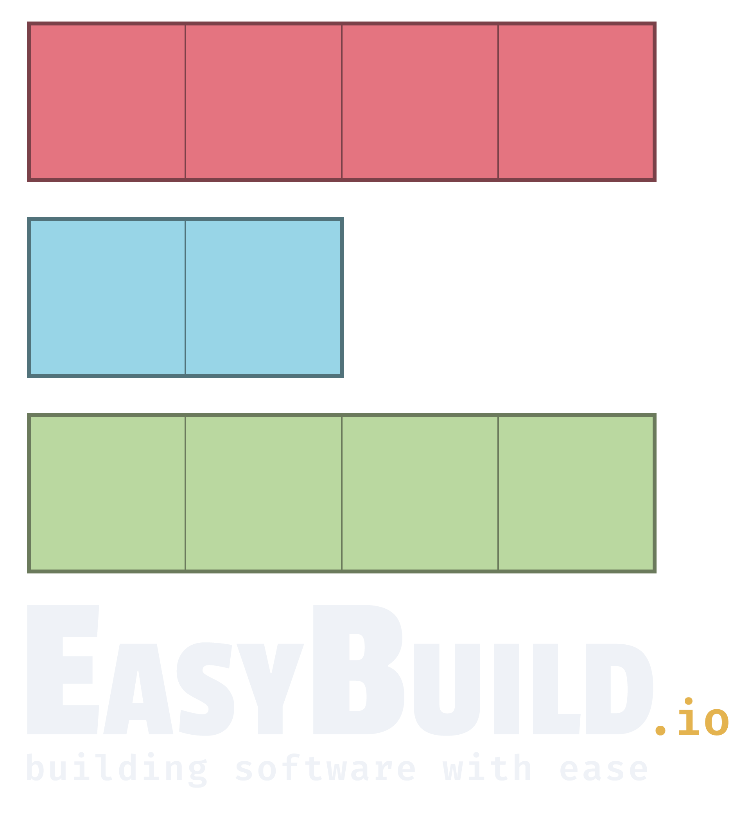

8th EasyBuild User Meeting
24-26 April 2023 @ London, UK
 (group picture from 5th EasyBuild User Meeting in Barcelona - Jan'20)
(group picture from 5th EasyBuild User Meeting in Barcelona - Jan'20)
EasyBuild is a software build and installation framework that allows you to manage (scientific) software on High Performance Computing (HPC) systems in an efficient way.
The EasyBuild User Meeting is an open and highly interactive event that provides a great opportunity to meet fellow EasyBuild enthusiasts, discuss related topics, and learn about new aspects of the tool.
It is intended for people that are already familiar with EasyBuild, ranging from occasional users to EasyBuild core developers, maintainers, and experts. Topics will be less introductory in nature than during other EasyBuild events that have been organized in the past.
The program includes presentations by both EasyBuild users and developers, as well as talks about open source projects relevant to the EasyBuild community.
Practical info - Registration - Organisation - Program - Contact
Practical information
The 8th EasyBuild User Meeting will be held Mon-Wed 24-26 April 2023 in London (UK).
The venue is The Council Room at 170's Queens Gate (Imperial College London).
This is an open meeting, anybody interested is welcome to join.
Attendance is free of cost, but registration is required.
Recommended hotels
The following hotels are recommended by Imperial College:- Park International Hotel(~10 min. walk to venue)
- Bailey'S Hotel London Kensington (~10 min. walk to venue)
- Queen’s Gate Hotel (1 min. walk to venue)
Zoom & YouTube
We intend to provide live streaming of all presentations that are part of the EUM'23 agenda, via Zoom and the EasyBuild YouTube channel.
Remote attendees will be able to join Zoom sessions for interactive discussions with the speakers.
Note that only registered attendees will have access to the Zoom sessions!
We also intend to record all sessions, and will make the recordings available shortly after the live presentations, via the EasyBuild YouTube channel.
Q&A via #eum channel in EasyBuild Slack
Remote attendees will be ale to submit questions via the #eum channel in the EasyBuild Slack. Comments in YouTube will be disabled for the live streaming events.
If you are not logged in to the EasyBuild Slack yet, you can request an invitation to join via https://easybuild.io/join-slack.
Registration
If you plan to attend one or more presentations, you must register. Seats are limited.
Although attendance is free and open to anyone, having a good view on how well the different sessions will be attended is important for us to be well prepared.
To register your attendance, please visit:
https://event.ugent.be/registration/eum23
Updates and practical information will be sent via email to anyone who registered.
Registration will be open until Sunday 2 April 2023.
Organisation
- Jörg Saßmannshausen (Imperial College London, UK)
- Simon Branford (University of Birmingham, UK)
- Jasper Grimm (University of York, UK)
- Adam Huffman (Big Data Institute, Oxford, UK)
- Kenneth Hoste (HPC-UGent, Belgium)
Program
The 8th EasyBuild User Meeting consists of 3 days of presentations and hands-on sessions.
Please note that all times are in Universal Coordinated Time (UTC)!
We intentionally left ample time in between talks to allow for Q&A, interactive discussions, switching between speakers and breaks.
Overview
- Mon 24 April 2023
- [10:00 UTC] Welcome (informal)
- [12:00 UTC] (lunch break)
- [13:00 UTC] (keynote?)
- [14:00 UTC] EasyBuild State of the Union
- [15:00 UTC] (coffee break)
- [15:30 UTC] HPC.social (Alan Sill, TTU)
- [16:00 UTC] (2-3 presentations)
- [17:30 UTC] (end)
- [18:30 UTC] (group dinner)
- Tue 25 April 2023
- [09:00 UTC] Welcome (informal)
- [10:00 UTC] (3-4 presentations)
- [12:00 UTC] (lunch break)
- [13:00 UTC] (3-4 presentations)
- [15:00 UTC] (coffee break)
- [15:30 UTC] (discussion/hands-on/tutorial)
- [17:30 UTC] (end)
- [18:30 UTC] (group dinner)
- Wed 26 April 2023
- [09:00 UTC] Welcome (informal)
- [10:00 UTC] (3-4 presentations)
- [12:00 UTC] (lunch break)
- [13:00 UTC] (discussion/hands-on/tutorial)
- [15:00 UTC] (social event)
[Mon 24 Jan 2023 - 10:00-12:00 UTC]
Welcome to EUM'23
Informal welcome session, coffee/tea/cookies will be available.
[Mon 24 April 2023 - 13:00-14:00 UTC]
(keynote)
(more info soon)
[Mon 24 April 2023 - 14:00-15:00 UTC]
EasyBuild State of the Union
by Kenneth Hoste (HPC-UGent, Belgium)
Let's look back at what was changed in EasyBuild in the last year, how we are doing right now, what we are currently working on, which challenges are ahead, and the enhancements and changes in EasyBuild we envision for the future.
In addition, the highlights of the last EasyBuild User Survey will be covered in this talk.
[Mon 24 April 2023 - 15:30-16:00 UTC]
HPC.social
by Alan Sill (Texas Tech University, US)
(more info soon)
Contact
In case of questions, please contact eum@lists.ugent.be.